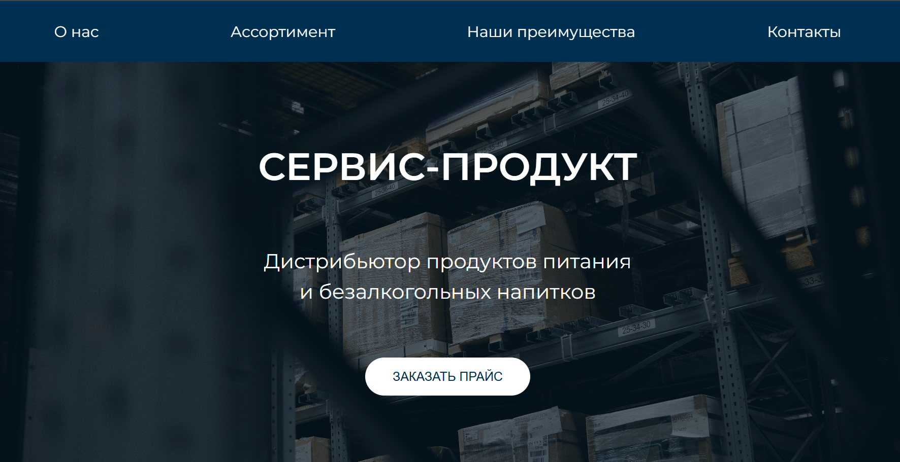
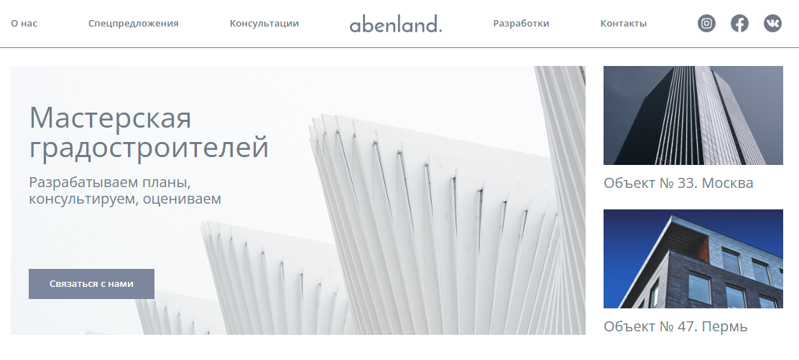

Обо мне
Меня зовут Дарья, мне 25 лет. Уже более трёх лет я увлечённо изучаю frontend-разработку. Имею высшее инженерное образование и прошла курсы профессиональной переподготовки в сфере веб-разработки. За это время я успела поработать над реальным коммерческим проектом, что дало мне практический опыт и понимание задач на продакшене. Продолжаю развиваться и стремлюсь создавать чистый, адаптивный и понятный код.
- HTML
- CSS
- JavaScript
- React
- Redux
- Git
- Figma
- Webpack
- Vite
- Адаптивная верстка
- Кроссбраузерная верстка
мои проекты
-
Service Product
Коммерческий SPA-проект для дистрибьютора продуктов питания из Ростова-на-Дону. Выполнен с нуля с акцентом на производительность, адаптивность и поддерживаемость кода. Приложение построено на компонентной архитектуре с использованием React и SCSS-модулей. В проекте используется кастомная сборка на Webpack с оптимизированной конфигурацией для продакшена. Организован деплой через Vercel с поддержкой CI/CD. Проект в активной поддержке: регулярно обновляется, масштабируется, дорабатывается по запросу клиента.

- React
- Webpack
- Babel
- SCSS
- HTML5
- JavaScript (ES6+)
- Vercel
- Git
- GitHub
- Адаптивная вёрстка
- SEO-оптимизация
- Кроссбраузерная совместимость
-
Ceramic Soul
Учебный одностраничный веб-проект (SPA), созданный с использованием современного стека: Vite, JavaScript (ES6+), SCSS и HTML5. Проект разработан с нуля в учебных целях, с упором на семантику, адаптивность и производительность интерфейса. В качестве инструмента сборки использован Vite, основанный на Rollup, что позволило добиться быстрой разработки и компактного финального бандла. Также в процессе работы был настроен собственный конфиг для продакшн-сборки с оптимизацией ассетов, кода и модулей.

- JavaScript (ES6+)
- Vite
- Rollup
- SCSS
- GitHub Pages
- GitHub Actions
- HTML5
- CSS3
- Адаптивная вёрстка
- Кроссбраузерность
-
Сайт бронирования ЖД билетов
Учебное SPA-приложение на React для поиска и бронирования железнодорожных билетов с использованием React Router для маршрутизации и Redux для управления состоянием. Проект включает работу с серверными данными, фильтрацию и сортировку результатов, а также адаптивный дизайн, обеспечивающий удобство использования на различных устройствах. Компонентный подход и оптимизация производительности делают интерфейс быстрым и удобным.

- HTML
- SASS
- Vite
- Redux
- React Router
- Fetch API
- JavaScript (ES6+)
- Git
- GitHub
- Webpack
- ESLint
-
Abenland
Учебный проект — одностраничный сайт портфолио, выполненный с использованием современного фронтенд-стека. В работе применён компонентный подход к верстке с использованием SASS для удобной и масштабируемой стилизации, а сборка организована через Vite для быстрой и эффективной разработки. Использован чистый, семантический HTML5 и современный JavaScript (ES6+) для создания интерактивных элементов и анимаций. Проект адаптивен и оптимизирован для разных устройств и экранов. В процессе работы особое внимание уделялось структуре кода, удобству поддержки и производительности. Развернут и размещён на GitHub Pages.

- Vite
- SASS
- GitHub Pages
- GitHub Actions
- HTML5
- CSS3